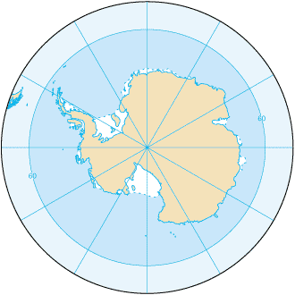
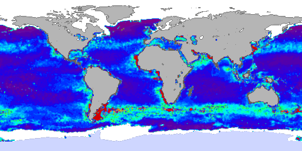

Oceanul Antarctic este un corp de apă care înconjoară continentul Antarctica. El este al patrulea mare ocean și a fost ultimul clasificat astfel, fiind acceptat printr-o decizie a Organizației Internațională Hidrografică, IHO în 2000. Această schimbare reflectă descoperiri recente în oceanografie, în special despre curente oceanice. Alte surse precum National Geographic Society din SUA continuă să demonstreze că Oceanul Atlantic, Oceanul Pacific și Oceanul Indian se extind până la Antarctica. Doar 28 din cele 193 națiuni ale lumii au participat la sondajul organizat de către IHO în 2000, și doar 18 au votat în favoarea noului nume, "Oceanul Antarctic". Doar 14 voturi au fost plasate în favoarea stopării oceanului la linia imaginară la 60 de grade de latitudine, celelalte 14 voturi fiind în favoarea plasării limitei oceanului la 35 de grade sud, o latitudine echivalentă cu Marea Mediterană în emisfera de nord.
